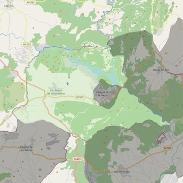

San Martín Obispo
- Arciprestazgo
- San Martín de Valdeiglesias
- Población
- San Martín de Valdeiglesias
- Dirección postal
- Pza. Real, s/n
- Código postal
- 28680
- Extensión
- 116,49 km² (11.649 ha)
- Teléfono
- 918 610 014
- Correo electrónico
- smvparroquia@gmail.com
- Información demográfica
- De la parroquia · De la población (San Martín de Valdeiglesias) · Del arciprestazgo (San Martín de Valdeiglesias)


Descargar mapaLímites según decreto
Los del término municipal